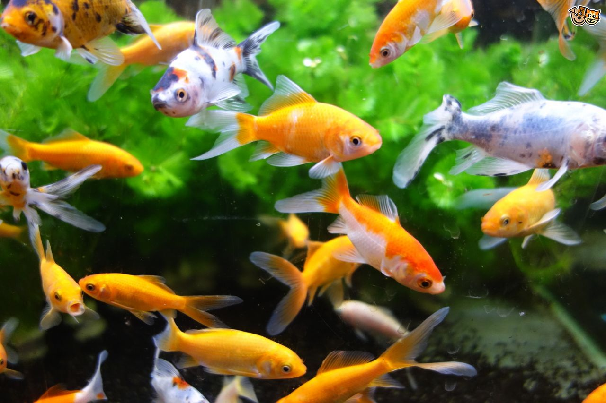

Just Keep Swimming
When considering a home aquarium, be aware that the health of a fish is directly related to the health of its watery environment. Maintaining good water quality is extremely important, whether you are taking care of your first goldfish or balancing a saltwater aquarium with fish and invertebrates. Beyond the importance of establishing filtration to remove waste products, many fish require a water heater to assure appropriate water temperature or are sensitive to sudden water temperature changes. Even common household fumes and cleaners can impact their water quality. If fish are kept outside in ponds, it is important to make sure they are protected from predators and environment extremes that can put their health at risk.